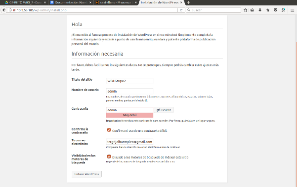
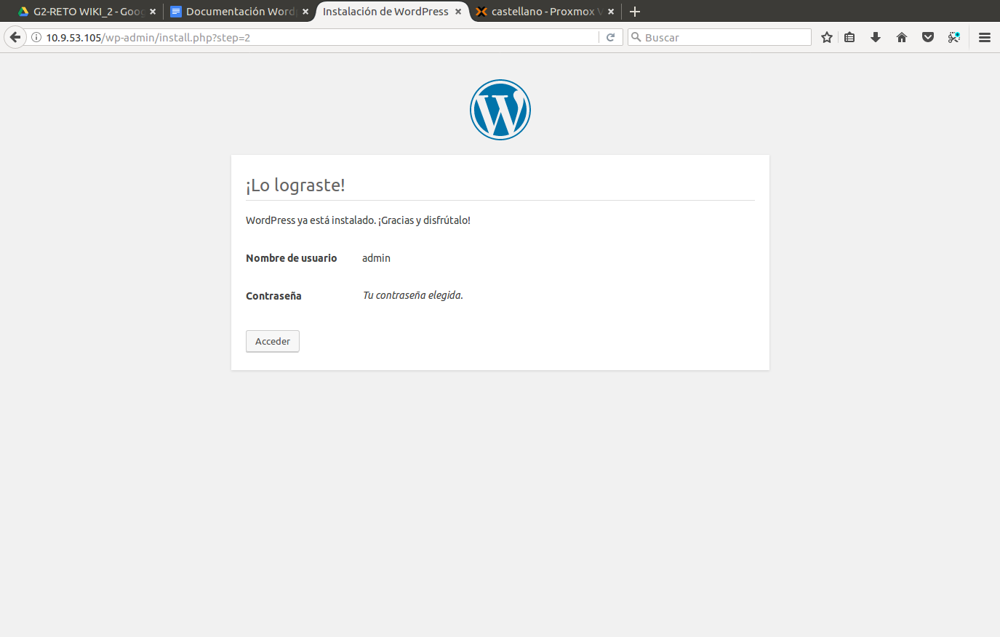

¿QUÉ ES?
Es un sistema de gestión de contenidos (CSM) que permite crear y mantener un blog u otro tipo de web. Es un sistema ideal para un sitio web que se actualiza periodicamente. Si se escribe contenido con cierta frecuencia, cuando alguien accede al sitio web, puede encontrar todos esos contenidos ordenados cronologicamente.
¿PARA QUÉ SIRVE?
- BLOG
- WEBS EMPRESARIALES
- TIENDAS ONLINE
- PERIÓDICO DIGITAL
- CENTRAL DE RESERVAS
INSTALACIÓN
Entraremos en modo MySQL mediante el comando mysql -u root -p y ahora introduciremos el comando CREATE DATABASE wordpress. Después comprobaremos que se haya creado correctamente con el comando SHOW DATABASES.
Ahora crearemos un usuario para la base de datos con el comando CREATE USER adminwordpress@localhost IDENTIFIED BY ‘admin’.
Ahora le daremos privilegios al usuario creado anteriormente en la base de datos con el comando GRANT ALL PRIVILEGES ON wordpress.* TO adminwordpress@localhost;
Ahora descargaremos el paquete de Wordpress en castellano mediante el comando wget https://es.wordpress.org/wordpress-4.8.2-es_ES.tar.gz.
Ahora introducimos el comando tar xzvf wordpress-4.8.2-es_ES.tar.gz y esperamos a que acabe.
Ahora actualizaremos los repositorios con el comando sudo apt-get update y despues descargaremos los paquetes con los comando apt-get install php7.0-gd y sudo apt-get install libssh2–1-dev libssh2–1.
Un archivo de configuración de ejemplo , que se acerca mucho al que necesitamos, está incluido por defecto. Aunque, necesitamos copiarlo a la localización del archivo de configuración por defecto para que WordPress reconozca al archivo. Lo haremos así: cp wp-config-sample.php wp-config.php.
Ahora que tenemos un archivo de configuración con el que trabajar, lo abriremos con un editor de texto con el comando nano wp-config-php.
Ahora entraremos en el directorio donde hayamos instalado Wordpress, en nuestro caso escribiremos cd ~/wordpress.
Ahora entraremos en la IP de nuestro server.
Rellenamos los campos que nos pide:
Ahora accedemos:
Ahora nos logueamos con el usuario y contraseña que hayamos puesto.